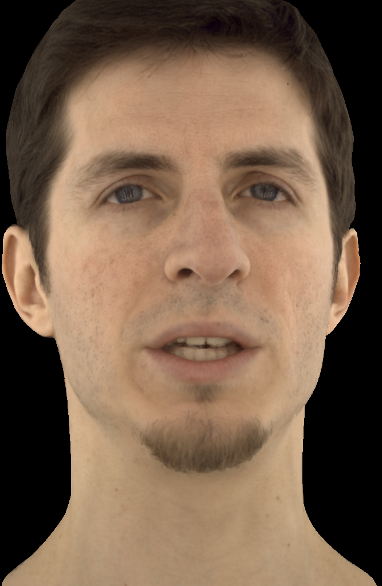

In this paper, we propose Neural Point-based Volumetric Avatar (NPVA), a method that adopts the neural point representation as well as the neural volume rendering process and discards the predefined connectivity and hard correspondence imposed by mesh-based approaches.
Specifically, the neural points are strategically constrained around the surface of the target expression via a high-resolution UV displacement map, achieving increased modeling capacity and more accurate control. We introduce three technical innovations to improve the rendering and training efficiency: a patch-wise depth-guided (shading point) sampling strategy, a lightweight radiance decoding process, and a Grid-Error-Patch (GEP) ray sampling strategy during training.
Experiments conducted on the Multiface dataset demonstrate the effectiveness of our designs, outperforming previous state-of-the-art methods, especially in handling challenging facial regions.

The talking head rendered using our NPVA model. The left part is the input (driving) mesh, the middle part is our rendering result, and the right part is the detailed depth map generated by the volume rendering.
A neutral expression rendered by our approach.
A neutral expression rendered by NPVA(ours), DAM, PiCA and MVP.
A normal expression rendered by our approach.
A normal expression rendered by NPVA(ours), DAM, PiCA and MVP.
An extreme expression rendered by our approach.
An extreme expression rendered by NPVA(ours), DAM, PiCA and MVP.
@article{DBLP:journals/corr/abs-2307-05000,
author = {Cong Wang and
Di Kang and
Yan{-}Pei Cao and
Linchao Bao and
Ying Shan and
Song{-}Hai Zhang},
title = {Neural Point-based Volumetric Avatar: Surface-guided Neural Points
for Efficient and Photorealistic Volumetric Head Avatar},
journal = {CoRR},
volume = {abs/2307.05000},
year = {2023}
}